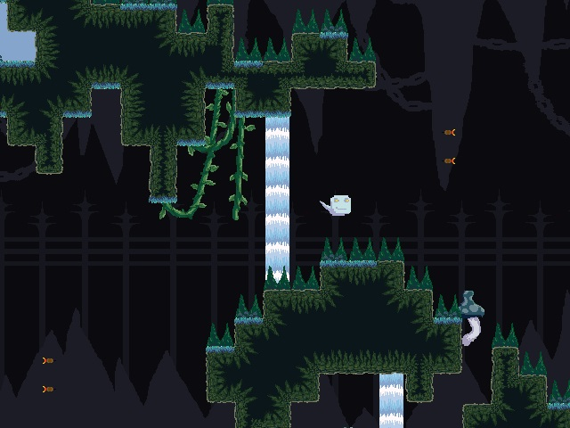

Soulstealer

Overview
You are a soul cast in the depths of Hades along with the other lost sinners. In order to escape you must make a suitable offering to the Gods. But as a simple soul you are weak and fragile. Use your powers of soul possession to take over the other enemies wandering around the depths of Hades and use their abilities to collect the 3 offerings required to escape. A game developed for the Ludum Dare 32 Game Jam where I served as Project Lead, Programmer, and Level Designer.